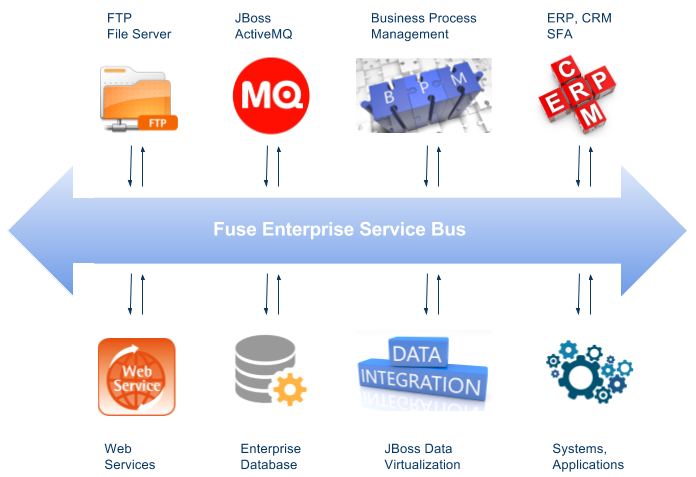
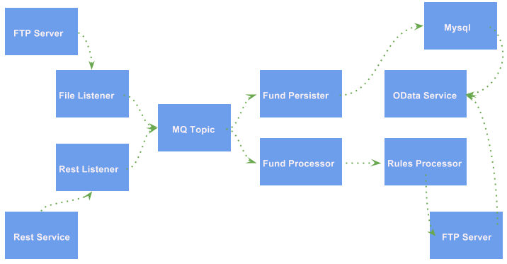

$ unzip jboss-fuse-karaf-6.3.0.redhat-187.zip && cd jboss-fuse-6.3.0.redhat-187Fuse All In One Demo
The JBoss Fuse All In One Demo will demonstrate the integration with FTP Server, REST Web Service, Mysql Database, JBoss A-MQ, JBoss BPM Suite, JBoss Data Virtualization, SAP ERP Systems, etc.

Demo Intro
In this demo, we look at some common scenarios that may arise at a FSI based customer although it’s generic enough that it could be demo’d for a broad audience too. The domain is loosely based around an event that generates a new Fund that then needs to be broadcasted to a set of interested consumers where each can handle the event separately.
There are several modules, as below figure:

-
JBoss Fuseprovide the fundamental Enterprise Service Bus and Agile Integration posibility -
FTP Serverprovide the transformation and persistence capability, which is a entry point of a new transaction -
File Listenerlistening onFTP Serverfor any income transaction, once a new transaction come in, it will be forward to AMQ Topic -
Rest Serviceprovide REST API for transaction transformation, which is another entry point of a new transaction -
Rest Listenerlistening onRest Servicefor any income transaction, once a new transaction come in, it will be forward to AMQ Topic -
Fund Persisterconsumers from a topic that represents a new fund being generated. this service is responsible for storing the Fund to a database -
Fund Processorconsumes from a topic that represents a new fund being generated. this service transforms the data and stores to a different file location. -
Rules Processorcontinues to process the transaction base Business rules and stores to FTP Server -
OData Serviceprovides the data service for integrated data from FTP Server and Database.
Steps
0.1 - JBoss Fuse
JBoss Fuse 6.3 Install
Edit etc/users.properties, comment out
admin=admin,admin,manager,viewer,Monitor, Operator, Maintainer, Deployer, Auditor, Administrator, SuperUserStart JBoss Fuse
./bin/start0.2 - FTP Server
Install vsftpd on RHEL 7
yum install -y vsftpd ftpStart vsftpd
systemctl start vsftpdValidate vsftpd
# netstat -antulop | grep vsftpd
tcp6 0 0 :::21 :::* LISTEN 30569/vsftpd off (0.00/0/0)Example of put files to FTP server
$ ftp localhost
Trying ::1...
Connected to localhost (::1).
220 (vsFTPd 3.0.2)
Name (localhost:kylin):
331 Please specify the password.
Password:
230 Login successful.
put /home/kylin/tmp/sample.xml /home/kylin/ftp0.3 - File Listener
-
Edit the file-listener service, make sure the ftp server directory
~/ftpbe configured as target folder, which this can be done use JBDS with Fuse Integration Plugin.
Package the file listener service
$ cd jboss-fuse-fsi-demo/file-listener && mvn clean installDeploy the file listener service to JBoss Fuse
cp target/file-listener-1.0-SNAPSHOT.jar ~/jboss-fuse-6.3.0.redhat-187/deploy/0.4 - Rest Service
The Rest Service provide the same function as FTP Server, it can used to start a new fund transaction.
Start Rest Service
$ cd jboss-fuse-fsi-demo/rest-service && mvn clean install
$ java -jar target/rest-service-0.1.0.jarThe REST Service contains the following API:
0.5 - Rest Listener
The REST Listener use the CBR pattern, which provide a http proxy to REST Service.
Package the rest listener service
$ cd jboss-fuse-fsi-demo/rest-listener && mvn clean installInstall camel-jetty on JBoss Fuse
$ ./bin/client
JBossFuse:admin@root> features:install camel-jettyDeploy the rest listener service to JBoss Fuse
cp target/rest-listener-1.0-SNAPSHOT.jar ~/jboss-fuse-6.3.0.redhat-187/deploy/Note that, the above rest service provide the following API:
0.6 - Mariadb
Install & Start
yum groupinstall mariadb mariadb-client -y
systemctl start mariadbPrepare Database
# mysql -u test_user -p
Enter password:
MariaDB [(none)]> use test;
MariaDB [test]> source ~/fund-persister/src/main/resources/sql/tables-mariadb.sql0.7 - Fund Persister
Package the fund persister service
$ cd jboss-fuse-fsi-demo/fund-persister && mvn clean installInstall camel-mybatis on JBoss Fuse
$ ./bin/client
JBossFuse:admin@root> features:install camel-mybatisDeploy the mysql connector to JBoss Fuse
cp ~/mysql-connector-java-5.1.35.jar ~/jboss-fuse-6.3.0.redhat-187/deploy/Deploy the fund persister service to JBoss Fuse
cp target/fund-persister-1.0-SNAPSHOT.jar ~/jboss-fuse-6.3.0.redhat-187/deploy/0.8 - Fund Processor
Package the fund processor service
$ cd jboss-fuse-fsi-demo/fund-processor && mvn clean installDeploy the fund processor service to JBoss Fuse
cp target/fund-processor-1.0-SNAPSHOT.jar ~/jboss-fuse-6.3.0.redhat-187/deploy/0.9 - Fuse Drools Integration
Install Fuse Drools Integration
unzip fuse-integration-karaf-distro-1.5.0.redhat-630018.zip -d jboss-fuse-6.3.0.redhat-187/Add features URL
features:addurl mvn:org.drools/drools-karaf-features/6.5.0.Final-redhat-2/xml/features-fuse-6_3
features:addurl mvn:org.jboss.integration.fuse.quickstarts/karaf-features/1.7.0.redhat-630013/xml/featuresAdd Features
features:install fuse-bxms-quickstart-camel-spring-drools-decision-table1.0 - Rules Processor
Package the rules processor service
$ cd jboss-fuse-fsi-demo/rules-processor && mvn clean installDeploy the rules processor to JBoss Fuse
cp target/rules-processor.war ~/jboss-fuse-6.3.0.redhat-187/deploy/1.1 - JBoss Data Virtualization
Start JBoss Data Virtualization
$ ./bin/standalone.sh -Djboss.socket.binding.port-offset=200Set up datasource
$ ./bin/jboss-cli.sh --controller=127.0.0.1:10199 --connect
/subsystem=datasources/data-source=MysqlDS:add(driver-name=mysql, jndi-name=java:/MysqlDS, connection-url=jdbc:mysql://localhost:3306/test, user-name=test_user, password=redhat, enabled=true, use-java-context=true, min-pool-size=5, max-pool-size=30)
/subsystem=datasources/data-source=MysqlDS:enable()
/subsystem=datasources/data-source=MysqlDS:test-connection-in-pool()
/subsystem=resource-adapters/resource-adapter=fileQS:add(module=org.jboss.teiid.resource-adapter.file)
/subsystem=resource-adapters/resource-adapter=fileQS/connection-definitions=fileDS:add(jndi-name=java:/fileDS, class-name=org.teiid.resource.adapter.file.FileManagedConnectionFactory, enabled=true, use-java-context=true)
/subsystem=resource-adapters/resource-adapter=fileQS/connection-definitions=fileDS/config-properties=ParentDirectory:add(value=/home/kylin/tmp/output/)
/subsystem=resource-adapters/resource-adapter=fileQS/connection-definitions=fileDS/config-properties=AllowParentPaths:add(value=true)
/subsystem=resource-adapters/resource-adapter=fileQS:activateDeploy sample-vdb.xml
$ cp files/sample-vdb.xml ~/jdv-6.4/standalone/deployments/The following api is the select * from from Tables/Views:
-
http://localhost:8280/odata4/SampleVDB/MysqlSource/$metadata
-
http://localhost:8280/odata4/SampleVDB/MysqlSource/funds?$format=json
-
http://localhost:8280/odata4/SampleVDB/ViewModel/SampleView?$format=json
-
http://localhost:8280/odata4/SampleVDB/ViewModel/ComparisonView?$format=json
-
http://localhost:8280/odata4/SampleVDB/ViewModel/ComparisonView
1.2 - OData Service
Package the odata service
$ cd jboss-fuse-fsi-demo/jdv-service && mvn clean installDeploy the rules processor to JBoss Fuse
cp target/jdv-service-1.0-SNAPSHOT.jar ~/jboss-fuse-6.3.0.redhat-187/deploy/Using the following api to test the data:
-
http://localhost:8190/odata4/SampleVDB/MysqlSource/$metadata
-
http://localhost:8190/odata4/SampleVDB/MysqlSource/funds?$format=json
-
http://localhost:8190/odata4/SampleVDB/ViewModel/SampleView?$format=json
-
http://localhost:8190/odata4/SampleVDB/ViewModel/ComparisonView?$format=json
-
http://localhost:8190/odata4/SampleVDB/ViewModel/ComparisonView